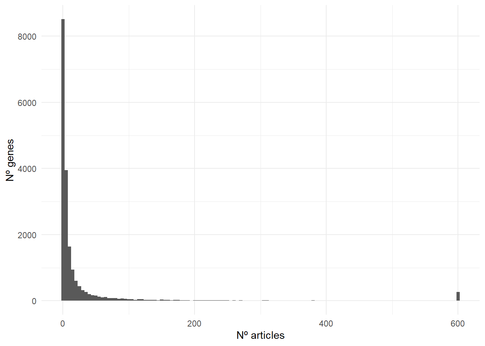
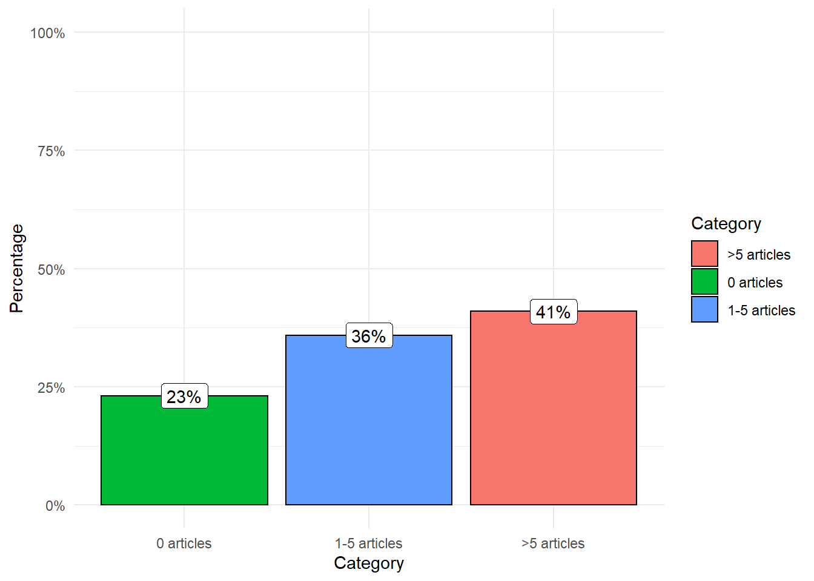

library(tidyverse)
library(scales)
library(rentrez)
gene_symbols <- read_tsv('http://ftp.ebi.ac.uk/pub/databases/genenames/hgnc/tsv/locus_types/gene_with_protein_product.txt') %>%
pull(symbol)
# Careful: it takes long to make all the queries
query_pubmed <- function(input_gene) {
print(input_gene)
Sys.sleep(0.3)
query_tmp <- entrez_search(db ="pubmed",
term = paste(paste0(input_gene, '[Title/Abstract]'),' AND ', 'cancer[Title/Abstract]'),
retmax = 600)
tibble('gene' = input_gene, 'n_hits' = length(query_tmp[['ids']]))
}
result_genes <- gene_symbols %>% map_dfr(~ query_pubmed(.x))In the biomedical literature, it is common to find sentences like:
“Besides, the gene [gene symbol] has been associated with [type of cancer(s)] [References]”
The structure of these sentences can change from article to article, but the underlying idea and goal are the same. I will try to summarise it in the following sentence:
“Hello reader/editor/reviewer, I was studying [any field], and I found this gene. I think it is a relevant/remarkable finding because it has been associated with cancer [references]. Therefore, it supports my hypothesis about the biological relevance of the gene in my field. Please, publish it.”
This approach is valid and logical as long as the association gene <-> cancer has been well-described and validated by different experiments and research teams. Unfortunately, some of these associations will be just spurious and no well-supported.
To explore this problem, we will count the number of articles in PubMed associating cancer with each one of the 19,205 protein-coding genes in the human genome.
To do so, we will write a simple code in R that will make a query for each gene to PubMed using the fantastic rentrez package.
The script has two simple steps:
- Download the official list of protein-coding gene symbols from HUGO.
- For each gene, make the following query “gene_symbol[Title/Abstract] AND cancer[Title/Abstract]” in PubMed (1-2).
You can find the code below:
result_genes %>%
ggplot(aes(n_hits)) +
geom_histogram(binwidth = 5) +
theme_minimal() +
labs(x = 'Nº articles', y = 'Nº genes')
result_genes %>%
mutate(category = case_when(
n_hits == 0 ~ '0 articles',
n_hits >= 1 & n_hits <= 5 ~ '1-5 articles',
TRUE ~ '>5 articles'
)) %>%
count(category) %>%
mutate(perc = n / sum(n)) %>%
ggplot(aes(reorder(category,perc), perc)) +
geom_col(aes(fill = category), color = 'black') +
scale_y_continuous(label = percent, limits = c(0, 1)) +
geom_label(aes(label = paste0(round(perc, 2)*100, '%'))) +
labs(fill = 'Category', x = 'Category', y = 'Percentage') +
theme_minimal()
As you can see in the plot, 41% of the genes have been associated with cancer in more than five articles, 36% in 1-5 articles, and only 23% of the genes with no publications.
If I choose a random protein-coding from the human genome and do a query in PubMed, it is more likely (77%) to find at least one article than none.
This data reflects how easy it is to find articles associating cancer with most of the genes. Therefore, when a reader finds this kind of argument [my gene is important -> gene + cancer + references] should take it with a grain of salt.
An interesting point is the reasons behind these numbers. From a biological perspective, it is difficult to assume the relevance in cancer of most of the human genome even though cancer is a group including many different kinds of diseases with their subgroups.
In the following points, I describe some of the reasons that might explain these numbers:
In most cases, a tumor is produced by the disruption of multiple genes simultaneously. Structural variants or chromosomal aberrations can map a considerable portion of the genome and disrupt many genes. This scenario makes it difficult to identify the driver mutations from those mutations (passengers) with no relevance and, therefore, finding the causal gene(s). Researchers have an important incentive: publish. Therefore, it makes sense that some researchers “orientate” their studies and results to the cancer field because it is a way to give more “weight” to their research even though, in some cases, the evidence for it is scarce.
The overproduction of scientific studies in specific areas of knowledge has already been described. For instance, in a comment published in 2021, the authors find that only 22% of gene-related publications were related to 1% of genes. Also, they find “new yearly publications focusing on a given gene is linearly proportional to the size of previous literature on it”.
It is reasonable to think that a similar scenario happens with many research published trying to link their analysis with any aspect of cancer though the evidence is limit.
To clarify, this is by no means a way to discredit researchers with work related to cancer. It is a way to make people aware of the problematic aspect of finding articles in PubMed describing the gene A associated with cancer and using them as evidence without further analysis.
Some ideas for a future version
There have been multiple naming conventions to identify genes. A paper describing a gene with a synonymous symbol instead of the official gene will not be reported in our script. Luckily, HUGO reports the list of synonymous symbols along with the official one. Therefore, it would be easy to adapt our script with new queries and merge the number of hits.
Some gene symbols can be confounded with composited names. For instance, the query “A1BG[Title/Abstract] AND cancer[Title/Abstract]” retrieved 22 hits, and one of them was describing the A1BG-AS1 lncRNA. An interesting idea would be to reanalyze the data but change cancer by each of the cancer types.
Notes
We can run the queries in parallel, adding the tag “future_” to the function “map_dfr” thanks to the package furrr. Note the API has a limit of simultaneous queries per IP.
I set a limit of 600 articles retrieved to avoid the exceeded limit error of the API.